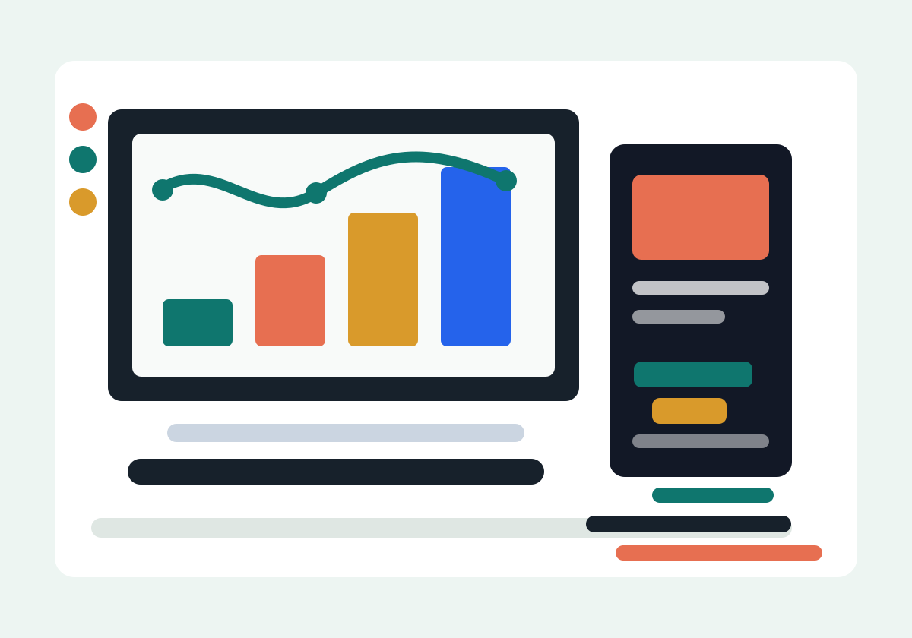

AI Application Builder
RAG pipelines, document ingestion, embeddings, Qdrant, Ollama, local LLM evaluation, and AI chatbot workflows.
AI & Analytics Portfolio
B.Tech CSE - AI and Analytics student building RAG pipelines, AI chatbots, analytics dashboards, and creative digital content.

Clear profile snapshot
I combine AI engineering basics, analytics thinking, dashboard building, and storytelling skills so technical work becomes easy to understand.
RAG pipelines, document ingestion, embeddings, Qdrant, Ollama, local LLM evaluation, and AI chatbot workflows.
Python, SQL, Excel data, Power BI, Tableau, data preprocessing, profiling, dashboards, and business-friendly reports.
Frontend pages, Android prototype thinking, Figma, Canva, video editing, social media, and brand presentation.
Click to read more
AI and Analytics enthusiast with hands-on experience in AI-powered applications, RAG pipelines, analytics dashboards, Generative AI, LLMs, data engineering, vector databases, and AI chatbot development.
B.Tech CSE - AI and Analytics, MIT ADT University, Pune. Passing year: 2026. CGPA: 8.96.
HSC, St. Ursula High School, Maharashtra State Board. Passing year: 2022. Percentage: 65.67%.
SSC, Smt. S.S. Ajmera High School, Maharashtra State Board. Passing year: 2020. Percentage: 92.60%.
AI Intern at Sagitec Solutions Pvt. Ltd., Pune from June 2025 to September 2025.
Worked on document ingestion, RAG, Qdrant, local Ollama model evaluation, query validation, and AI chatbot development.
MetricMind, Campus Connect, and PMPML Digital Transit Hub show AI analytics, smart-campus workflows, chatbot assistance, and user-researched Android prototyping.
Includes Microsoft Power BI, HCL AI LLM Developer Program, AWS Cloud Foundations, Coursera AI, Cisco Networking, IBM Python for Data Science, Tableau, and R visualization.
Video editing, Canva, Figma, social media strategy, startup perfume brand digital presence, and founder of Dil Se Desserts.
Featured project
An AI-powered analytics dashboard that automates visualization and report generation from CSV and Excel datasets, with local LLM insights and dynamic filtering.